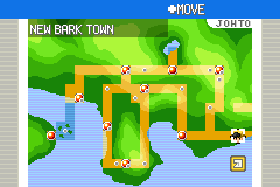

One line in observations.txt. Captures are raw mGBA frames taken by
tools/playtest/playtest.py. Full reasoning in
docs/port/decisions.md, section D112.
CDMap_FreeRegionMapResources ended with
FREE_AND_SET_NULL(gRegionMap), but gRegionMap is simply
whatever pointer the caller handed to CDMap_InitRegionMapData —
the region map module never allocated it. The live path,
ITEM_TOWN_MAP → FieldShowRegionMap →
FieldInitRegionMap, passes a struct CDRegionMap that sits
inside the handler's own allocation, so Free() was handed a
pointer eight bytes past a block header and wrote through a garbage link. The
Pokégear map card passes its own block and freed it a second time in
FreePokegearData. Either way the heap is corrupted and the next
Free() trips the allocator's own guard, which resets the ROM.
game: ASSERTION FAILED FILE=[src/malloc.c] LINE=[97] EXP=[block->magic == MALLOC_SYSTEM_ID]
Ownership moves back to the caller:
CDMap_FreeRegionMapResources now only clears the window bits and sets
gRegionMap = NULL; UnloadMapCard frees the block that
LoadCardBgs allocates for the card, and
FreePokegearData no longer does.
Four open/close cycles from the bedroom, fourth close:
The map itself, and the eighth cycle of a longer stress run — no assertion, no reset:


Reachability audit, for the record: CB2_InitPokegear has no callers,
so the Pokégear UI is unwired; no layout in data/ uses
MB_REGION_MAP, so no wall map is reachable; and no script grants
ITEM_TOWN_MAP. The tester reached the map through the debug menu,
which is the only way in at present — but both call sites were broken, so the
fix lands before either becomes reachable.